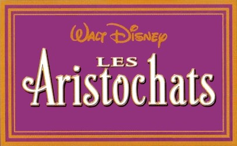
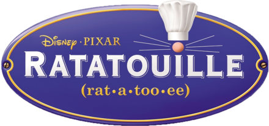

| Top | Dessin Animé 🎞 | Disney Emoji | Année | Personnage principal | Résumé |
|---|---|---|---|---|---|
| 1 |  | 🧺 🐱 🎹 🐈 | 1970 | Duchesse | Marie | Berlioz | Toulouse | O'Malley | Mme de Bonnefamille légue sa fortune à ses chats. Son cupide maître d'hôtel, veut hériter à leur place. Il les kidnappe et les abandonne en rase campagne. Duchesse et ses trois chatons doivent retrouver le chemin qui les ramènera à Paris. O'Malley, un malin matou vient à leur rescousse. |
| 2 | 🧠 ⚙️ 5️⃣ 🗣️ | 2015 | Joie | Tristesse | Peur | Dégoût | Colère | Riley, 11 ans, vient d’emménager à San Francisco. Elle a du mal à se faire à son nouvel environnement. Dans sa tête, les émotions se trouvent dans le quartier général et dirigent alors sa vie. |
|
| 3 | 🐰 🦊 👮♀️ | 2016 | Juddy Hopps | Nick Wilde | Nouvelle dans la police, Judy Hopps est une adorable lapine prête à tout. Elle s’attaque alors à une épineuse affaire d’animaux redevenus sauvages, en s’associant avec un renard, Nick Wilde, virtuose de l’arnaque. |
|
| 4 | 🌊 🐚 🐷 🐔 | Vaiana | Vaiana est choisie par l’océan afin de rendre son cœur à une île mourante, elle va traverser l’océan pour redonner vie et ressource à son peuple. |
||
| 5 | 🦁 👑 | 1994 | Simba | Simba, un lionceau, est exilé de son royaume après avoir été accusé d'être responsable de la mort de son père, Mufasa. Avec l'aide d'un mythique duo, Timon et Pumba, il décide de reprendre ce qui lui revient de droit. |
|
| 6 |  | 🥄 🐁 👨🍳 🥘 | 2007 | Rémy | Linguini | Rémy, un rat d'égoût, a un véritable don, celui de cuisiner, et un rêve : devenir un grand chef et le premier rat de goût. Il est prêt à tout pour vivre sa passion, et va s'installer sous les cuisines du restaurant d'Auguste Gusteau, la star des fourneaux. |
| 7 | 👩🏻 👘 ⚔️ 🏇 ⛩️ | 1998 | Mulan | Mulan est jeune fille qui méprise les conventions et l'éloigne des rôles dévolus aux filles devouées. Quand son pays est envahi par les Huns, Mulan, s'engage à la place de son père dans le but de lui sauver la vie. Elle va devenir, avec l'aide d'un dragon, un guerrier hors du commun. |